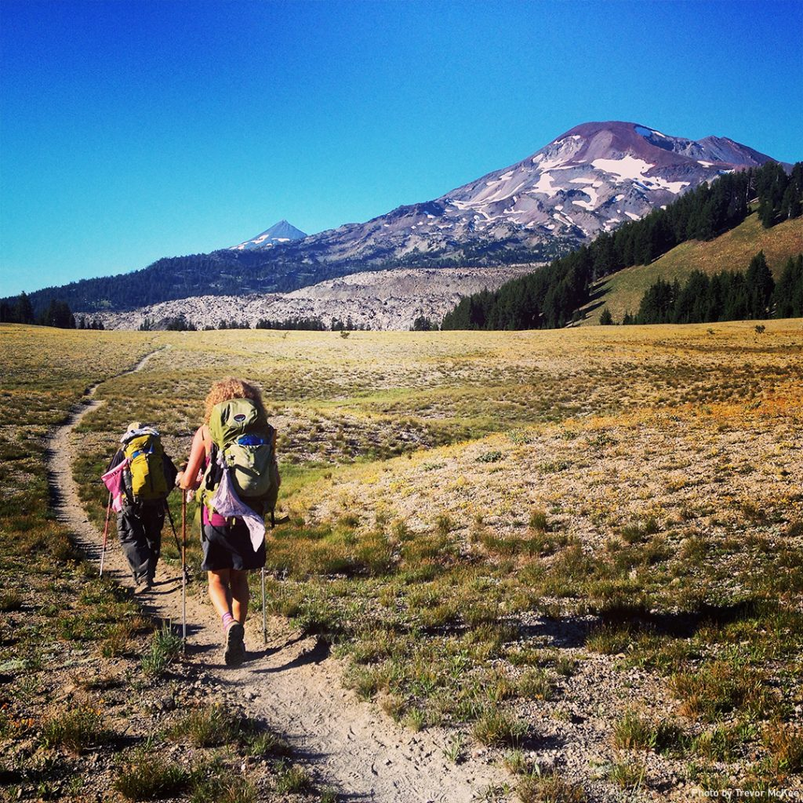
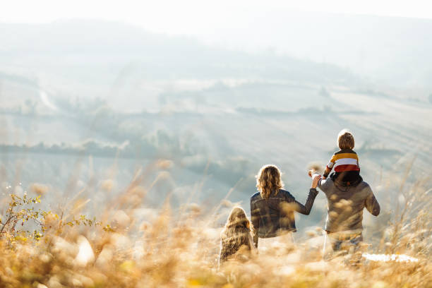

Who we are
Wonder Walkers is an organisation helping to get people exploring the great outdoors, once again. The organisation was inspired by the book, The Wonder Walkers by Micha Archer Growing up as a child, the book inspired me to be outside on adventures as supposed to playing computer games. As an adult, I drifted away from my former self and found myself in some really hard times. One day, I was having a garage sale, when I came across this book and seeing it once again brought me to tears. Suddenly, I found myself back out in the open, not questioning those hard times.
They just seemed to melt away!
Why you should get outdoors
It's no secert that exploring the great outdoors does wonders for your mental health. A hit of dopamine (a chemical released in the brain that makes you feel good) does wonders for the soul. The simple act of going outside, listening to birdsong and absorbing your surroundings is good for the heart and good for the mind.
Our Goal
Our aim is simply to encourage people to breath in what's around them. Whether that's a simple stroll along the canal, an obstacle race or climbing a mountain.We hope you find our site useful, as it contains some trusted and tested gear for getting outside, our personal favourite walks for you to try, and a contact page should you need assistance for getting outside.
